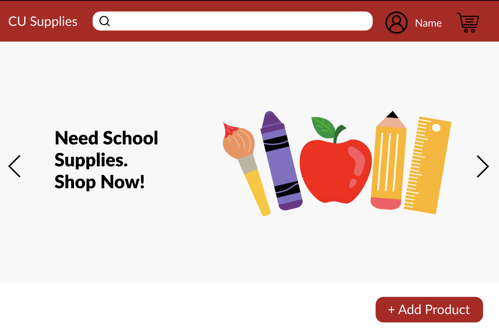

Projects
- CU Supplies
- CU Supplies is an ecommerce site designed for Cornell students to sell and purchase course material. The website provides students a convenient platform to access necessary academic resources while promoting a sense of community through peer-to-peer transactions within the university ecosystem.
 - FitPetz
- FitPetz is a mobile app designed to incentivize exercise through virtual pets and exclusive rewards. Users can enhance their fitness journey while enjoying a rewarding and interactive experience through features such as in-game currency, and special themed items.

- Portfolio
- Dive into my portfolio where innovation meets passion, where each project tells a story of dedication and problem-solving. Explore my website's portfolio to learn more about my experience and creative endeavors.
Research
- "Deep Learning-Driven Catheter Tracking from Bi-Plane X-Ray Fluoroscopy of 3D Printed Heart Phantoms"
- Research Publication

Experience
Extracurriculars
- Cornell WebDev
- Integrate features into web projects (e.g. CU Supplies) to enhance overall user functionality and experience.
- Design and execute community-oriented projects aimed at addressing specific needs through innovative solutions.
- Participate in team meetings, code reviews, and feedback sessions to foster a collaborative environment.
- ORIE Student Researcher
- Conduct Operations Research and Information Engineering with the use of Excel and Python to analyze attendance patterns.
- Create data visualization and formulate optimization procedures tailored to enhance the operational efficiency of the Johnson Museum of Art
- Develop a nuanced comprehension of different trends that materialize when visitors engage in museum activities.
Work Experience
- C&G Enterprises Unlimited Data Analyst Intern
- Utilized data visualization tools to interpret large datasets and communicate findings to optimize business operations
- Conducted comprehensive data analysis as a Data Analytic to extract patterns and trends from customer preferences
- Analysed databases to make data-driven recommendations for process improvements and strategic decision-making.
- Google CSSI Intern
- Implemented interactive user interfaces to optimize the user experience across these web projects.
- Designed and executed 5+ web projects using HTML, CSS, and Javascript to tailor and enhance website functionality.
- Conducted thorough testing and debugging, ensuring seamless performance and cross-browser compatibility.
- Weill Cornell Medicine Biomedical Student Researcher
- Worked on image registration and tracking of surgical devices at Weill Cornell Mosadegh Lab for biomedical research.
- Engaged in data collection and image registration processes for "Deep Learning-Driven Catheter Tracking from Bi-Plane X-Ray Fluoroscopy of 3D Printed Heart Phantoms."
Relevant Coursework
- Human-Computer Interaction Design
- Object-Oriented Programming and Data Structures
- Introductory Design and Programming for the Web
- Practical Tools for Operations Research, Machine Learning and Data Science
- Information Ethics, Law, and Policy
- Linear Algebra
- Multivariable Calculus
- Differential Equations